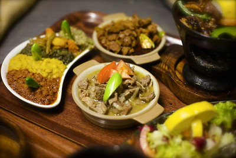

History of Eritrean Cuisine

Eritrean cuisine shares similarities with surrounding countries' cuisines; however, the cuisine has its unique characteristics.
The main traditional food in Eritrean cuisine is tsebhi (stew), served with injera (flatbread made from teff, wheat, or sorghum and hilbet (paste made from legumes; mainly lentil and faba beans). A typical traditional Eritrean dish consists of injera accompanied by a spicy stew, which frequently includes beef, goat, lamb or fish.
Overall, Eritrean cuisine strongly resembles that of neighboring Ethiopia, although Eritrean cooking tends to feature more seafood than Ethiopian cuisine on account of its coastal location. Eritrean dishes are also frequently lighter in texture than Ethiopian meals as they tend to employ less seasoned butter and spices and more tomatoes, as in tsebhi dorho.
Additionally, owing to its colonial history, cuisine in Eritrea features more Italian influences than are present in Ethiopian cooking, including more pasta specials and greater use of curry powders and cumin. People in Eritrea likewise tend to drink coffee. Christian Eritreans also drink sowa (a bitter fermented barley) and mies (a fermented honey beverage), while Muslim Eritreans abstain from drinking alcohol.
Common foods and dishes
Kitcha fit-fit is a staple of Eritrean cuisine. It consists of shredded, oiled, and spiced bread, often served with a scoop of fresh yogurt and topped with berbere (spice). When eating injera diners generally share food from a large tray placed in the centre of a low dining table. Numerous pieces of injera are layered on this tray and topped with various spicy stews. Diners break into the section of injera in front of them, tearing off pieces and dipping them into the stews.
The stews that accompany injera are usually made from beef, chicken, lamb, goat, mutton or vegetables. Most Eritreans, with the exception of the Saho, like their food spicy and hot. Berbere, a spice mixture that consists of a variety of common and unusual herbs and spices, accompanies almost all dishes. Stews include zigni, which is made with beef; dorho tsebhi, which is made with chicken; alicha, which is a vegetable dish made without berbere; and shiro, a purée of various legumes.
When making Ga’at a ladle is used to make an indentation in the dough, which is then filled with a mixture of berbere and melted butter, and surrounded by milk or yogurt. When dining, a small piece of Ga'at is dipped into the berbere and the butter sauce, and then into the milk or yogurt.
Influenced by its past as an Italian colony, Eritrean cuisine also features unique interpretations of classic Italian dishes. Among these specialties are pasta sauces spiced with berbere.
Courtesy of Wikipedia.